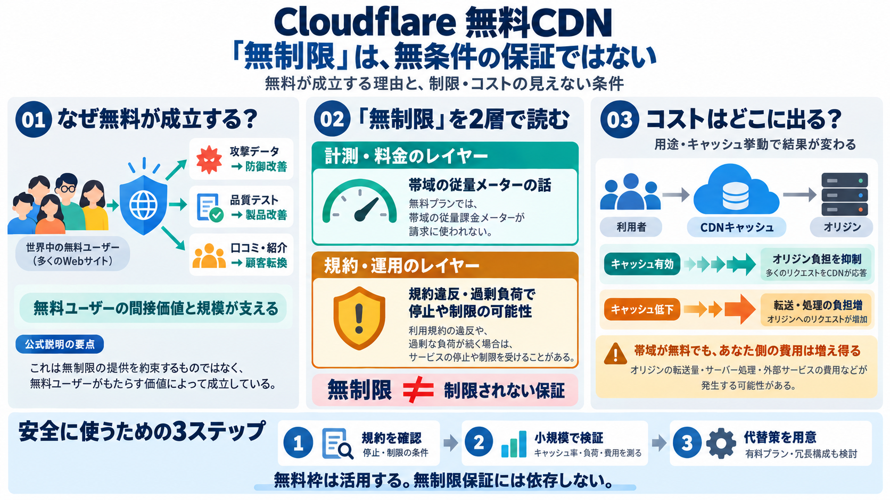

Cloudflare Free vs Paid Plans 2026 Which Tier Is Actually Worth It
## FAQ ### Does the Cloudflare free plan have a bandwidth limit? No metered bandwidth cap exists on the Cloudflare fre…

Cloudflare 無料CDNの検証
「無料で無制限の帯域」をどう読むべきか。公式発言と論点を整理し、利用判断に必要な“見えない条件”を掴みます。
本当に“ゼロ上限”？
無料CDNは本当に「完全に無制限（上限ゼロ）」ですか？それとも規約・運用・キャッシュ設計で制限されうる前提がありますか？
上限はある？（停止/制限の可能性）
コストはどこに出る？（オリジン/配信）
“無制限”の正体
「無料＝無制限」に見えても、実際は“メーター（計測上限）”と“運用裁量（制限条件）”が別レイヤーで存在し得ます。 （無制限 = ゼロ上限保証ではない）
計測上限（従量メーター有無）
運用裁量（規約違反/過剰負荷で制限）
ユーザー体験が変わる（突然/段階的）
なぜ無料が可能？（公式）
公式回答（CEO）では、無料顧客は「直接の売上」だけでなく、攻撃データ・品質テスト・採用/口コミなどの“間接価値”を生むため無料が成立すると説明しています。
多様な攻撃データ → 防御改善
採用/紹介/口コミ → 顧客転換
品質検証・テスト協力 → プロダクト改善
“鶏卵問題”への説明
帯域コストは規模が必要という前提に対し、無料顧客が初期の規模を作り、事業として回る形があると述べています（無料継続の合理性）。
コストは“量”で効いてくる
無料ユーザーが初期の規模を形成
※入力データ中では「企業は利益水準（粗利/黒字化）を達成している」主張も言及されています。
注意：無制限の言い方
別の回答では、「無制限」はマーケティング表現であり、規約違反や過剰負荷を理由に停止/制限が起こり得ると指摘されています。 “ゼロ上限保証”として解釈しないのが安全です。
規約違反 / 過剰負荷
アカウント停止・制限
キャッシュで結末が変わる
帯域が無料でも、キャッシュ（キャッシュ可能アイテム数/戦略）が期待通りでなければ、配信がオリジン側に寄り、結果的に“あなた側の負担”が増え得ます。
キャッシュ有 → オリジン負担を抑制
キャッシュ低下 → オリジンへ寄る
用途×キャッシュ挙動（小規模検証）
CDNは“見え方”が違う
CDNはキャッシュプロキシなので、侵入・攻撃やトラフィック増が「そのまま同じ比率で帯域コスト増」と直結しない可能性があります（通常時と計測がズレる）。
入出の見え方 / 課金対象が異なり得る
“トラフィック＝費用”単純計算は危険
判断のための質問
自分の用途で安全に使えるかは、「上限ゼロか」よりも、次の観点でリスクを潰せるかで決まります。
利用規約：停止/制限の条件は？（裁量）
キャッシュ：想定率を出せる？（大容量/動画等）
負荷：過剰負荷に該当しうる運用か
コスト：オリジン側の増加が起きないか
検証：小規模・段階移行・モニタリングで確かめる（bilingual: “検証 / verification”）
主張の対比
公式は無料の合理性を提示。一方で懸念側は「無制限の厳密保証はない」ことと「キャッシュ/裁量で制限やコスト変化があり得る」を強調します。
攻撃データ・品質・採用/口コミで回収、規模形成
規約/過剰負荷で停止、キャッシュ制限でオリジン寄り
実務の結論
「無料が動き続ける理由」は理解しつつも、「無制限保証」として期待しない。規約確認と小規模検証、測定結果に応じて有料/代替を用意します。
利用規約を確認（停止/制限の条項）
小規模検証＋モニタリング（cache/負荷）
期待コスト削減を測定し、有料/代替へ
最終まとめ
入力データの総合結論は「無料枠は成立し得るが、完全な無制限保証として受け取るのは危険」。制限やコスト転嫁の可能性を前提に設計してください。
使いどころ：小〜中規模の検証から始め、キャッシュ挙動とオリジン負担を測り、長期運用は有料/冗長構成も想定。
## FAQ ### Does the Cloudflare free plan have a bandwidth limit? No metered bandwidth cap exists on the Cloudflare fre…
サポート ヘルプセンター カスタマーサポート コミュニティフォーラム Developers Discord アカウントにアクセスできなくなりましたか？ Cloudflareステータス コンプライアンスリソース 信頼 G…
| | Cloudflare（アプリケーションプラン） | Amazon CloudFront | Akamai（NTTスマートデータプラットフォーム） | --- --- | | 基本料金（最安プラン） | 0ドル/月（Freeプラ…
About Cloudflare Network map Our team Logos & press kit Diversity, equity, & inclusion Impact/ESG © 2026 Cloudflar…
有効化 ##### Workers Cloudflare Workersは、JavaScript、Rust、C、およびC++で作成されたコードをサーバーレスでCloudflareのエッジにデプロイできる、開発者向けの製品です。 無料で…